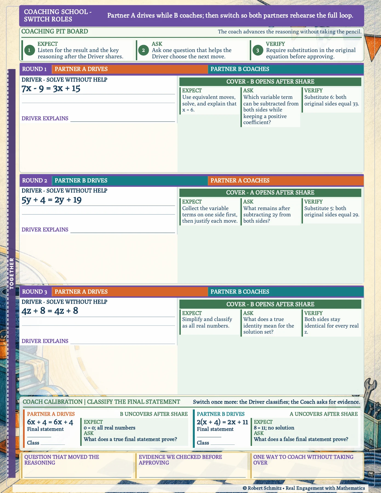
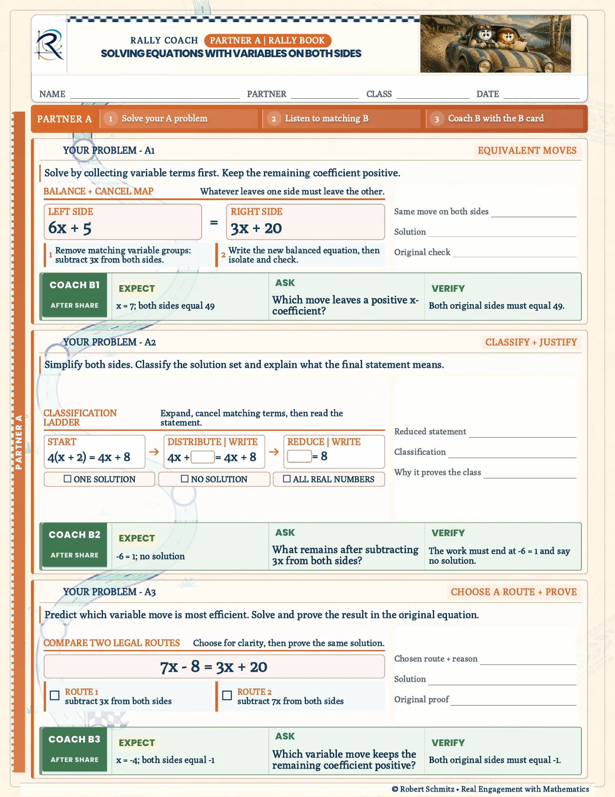
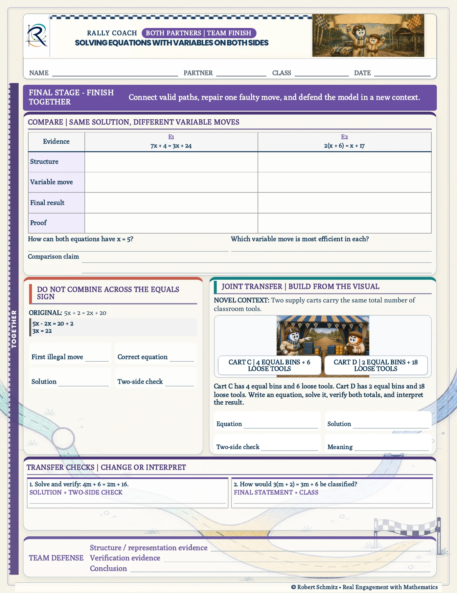

{kind=link}
{kind=link}
{kind=link}
Teach coaching as a skill
The coaching school models what to listen for, what to ask, and how to verify. The partner has a defined job beyond announcing whether the answer is right.
Partner practice · Peer feedback
Rally Coach Equations with variables on both sides
Give collaboration a script that moves the reasoning forward without taking over the pencil.
Explore the actual materials ↓
Clear roles. Better conversations.
The learner experience
Partners alternate between solving and coaching. The driver explains a solution; the coach uses an Expect, Ask, Verify routine to question the next move and require evidence. They finish by comparing methods and defending a model together.
Work independently before sharing the result and reasoning.
Ask a focused question and verify the original equation.
Trade roles, compare valid methods, and complete the team transfer task.
Inside the resource
Selected pages from the actual resource files. Open any page to inspect the details.

Student book, page 2. The coaching school models Expect, Ask, Verify across alternating roles.

Student book, page 3. Partner A’s own problems sit alongside coaching cards for Partner B.

Student book, page 7. Partners compare solutions, repair an error, and build an equation from a visual context.
Why I designed it this way
The coaching school models what to listen for, what to ask, and how to verify. The partner has a defined job beyond announcing whether the answer is right.
Role changes make each learner rehearse the full process. Partner pages distinguish the learner’s own problem from the coaching card for the other partner’s task.
Evidence & next evaluation
These authored materials show the activity structure and design decisions. Learner outcomes have not yet been measured for this case study.
Observe whether coaches ask useful questions before revealing answers, and use an individual exit task to distinguish shared success from independent understanding.